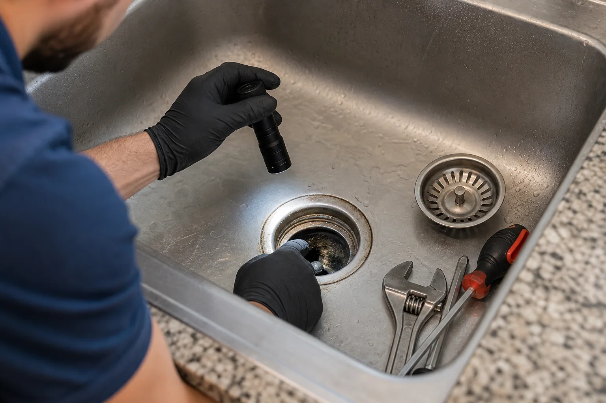
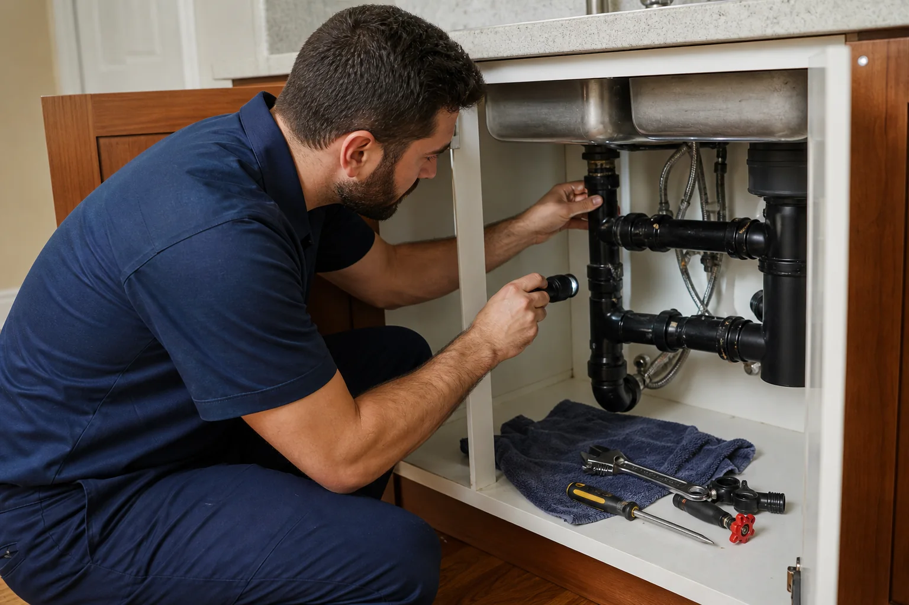
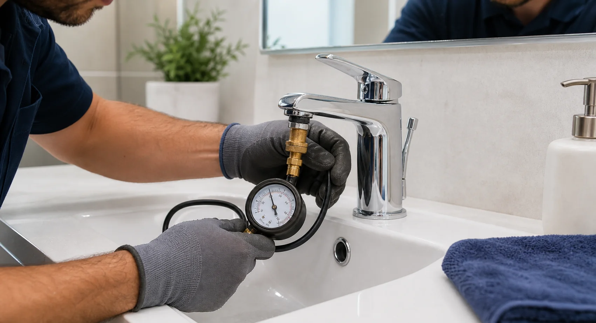
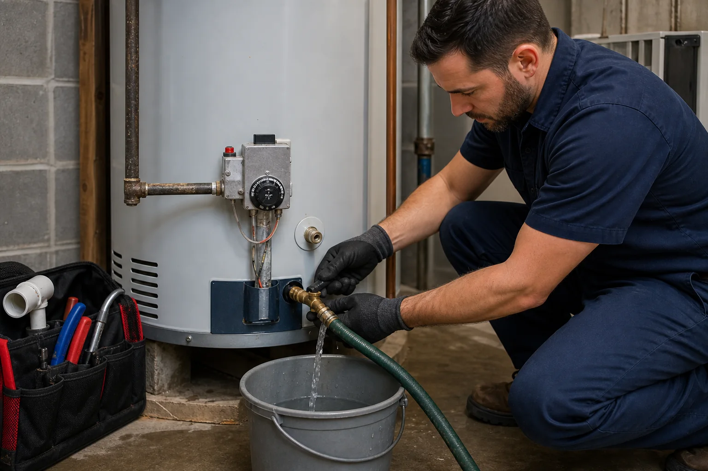

How To Prevent Kitchen Drain Clogs
Simple habits that can reduce grease buildup and recurring slow drains.
Read MoreComplete Plumbing Support
From emergencies and leak detection to water heaters, drain cleaning, and bathroom plumbing, Hidran helps customers connect with reliable local providers for the full cycle of plumbing needs.
Our Plumbing Solutions
Service coverage across urgent repairs, diagnostics, system upgrades, and everyday fixture support.
About Us
Hidran is designed to make plumbing service discovery easier. Customers can describe the issue once, review relevant service paths, and connect with local providers who handle the actual work.
Emergency response, diagnostics, repairs, installation, maintenance, and upgrade support.
Clear forms and phone CTAs help urgent requests move quickly.
Why Choose Us
The site is structured to support the complete customer journey: understand the service, submit details, connect with providers, and plan follow-up repairs or upgrades.

Our Process
Customer Feedback
"The service pages made it easy to understand what kind of plumbing help I needed before submitting a request. The process felt clear and fast."
Michael CarterMeet Our Experts
Service requests can cover urgent repairs, planned upgrades, diagnostics, and routine maintenance.
Customers can ask providers to verify licensing, insurance, and credentials before work begins.
Urgent plumbing issues can be routed based on location, service type, and provider availability.
Every service page explains included work, fit, process, important details, and FAQs.
Forms and contact paths collect enough context to support the next step.
Our Blog
Helpful maintenance topics for customers comparing service options.

Simple habits that can reduce grease buildup and recurring slow drains.
Read More
Low or inconsistent pressure can point to leaks, valves, or pipe issues.
Read More
Flushing, valve checks, and age review can help avoid cold-water surprises.
Read MoreFAQs